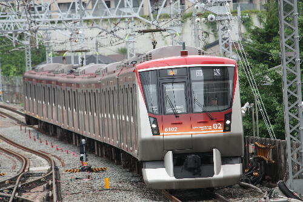

|

09.7.7溝の口
7月12日で大井町線は溝の口へ延伸！と同時に朝ラッシュ時の
田都準急は溝の口3番線への入線ができなくなるのです。
なぜって溝の口の2･3番線は大井町線用になるから･･･
そしてその大井町線延伸のため、溝の口の梶が谷寄りには
引込み線兼渡り線が設置されまして、それを撮ってきました。
なぜだかは忘れましたがたまたま学校が休みだったもので、
平日に撮ることができました。
溝の口から梶が谷方を。
こちらが改良前。
着くとこんな車両が待機中でした。実は写真の右奥にも回送が･･･

10両が妙に長く見えます。いやこんなもんか＾＾；
一応ここは定番撮影地だったらしいですね。
確か東急電車カレンダーにも何回か載ってました。
前はよくあったのになぁ。東武動物公園行き。めっきり減ってしまいました。

6000系の回送。
この構図も大井町線が延伸されると撮りにくくなりますね。
急行･北越谷。東武線では準急です。

清澄白河行きは今度のダイヤ改正で朝夕ラッシュ時以外は運転されなくなります。
そしてついに、渡り線兼引込み線を通って3番線に到着する列車が！
|